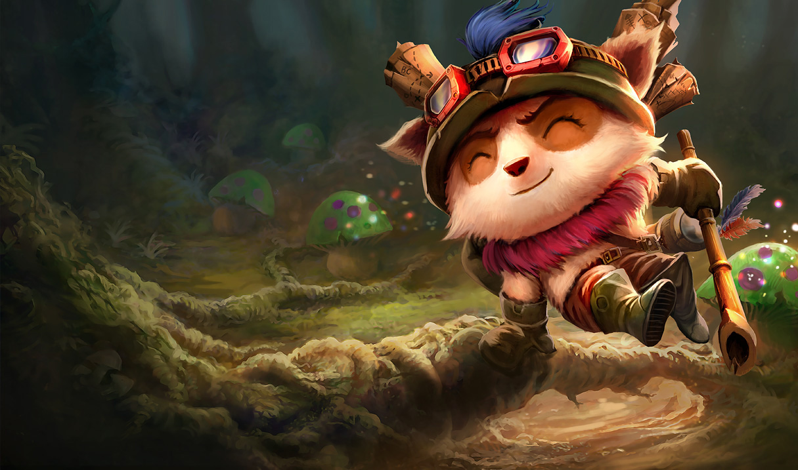

LoL考察ページ
筆者について
SN:Sethena S7最高ランク:Silver1 main role:adc,mid
ADCはジンクス、Midはアニーで回しております。ゲームについての細かい気づきなどを項目に分けて掲載していきます。上級者の方には当たり前のことかもしれませんがご容赦ください。
始めたきっかけ
高校の頃周囲でとても流行っておりまして、友人に半ば無理やりインストールされたのがきっかけです。タワーに突っ込んだりフィードしまくっていたのがいい思い出です（今も割とやっている）
Lolのココが良い！！
LoLには気楽に楽しめるノーマルモードと、腕前をかけて真剣に競うランクモードが主に存在します。私がランクをプレイし始めたのは実はつい最近で、私にとってこのゲームはほとんど友人達とワイワイ楽しむパーティーゲームの側面がありました。真剣にやってもよし、気軽に友人とのコミュニケーションツールとして遊んでも良いところが、私がこのゲームを長年飽きずにプレイすることができた利点です。